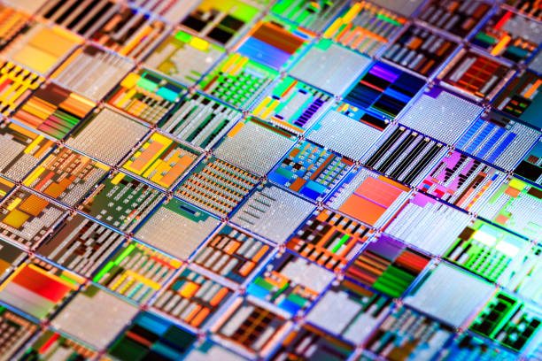
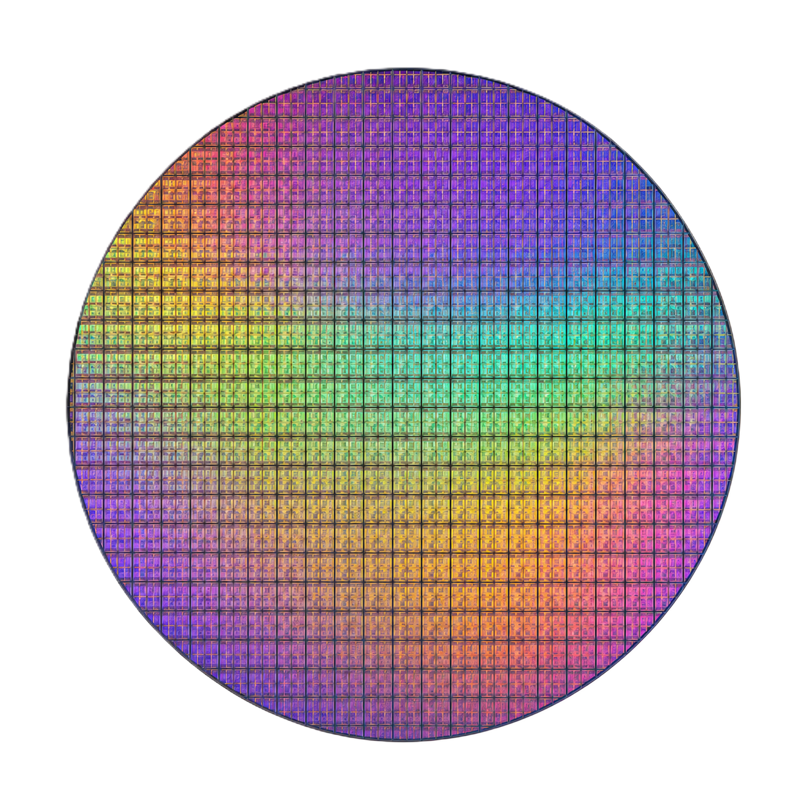

Deposición
Adición de capas delgadas mediante CVD o PVD. Control preciso de temperatura y flujo de gas para uniformidad.
Temperatura crítica: ~450°C
Un modelo de Random Forest entrenado con ~7,500 registros
predice defectos en obleas semiconductoras antes de que ocurran.
Fotolitografía, física y matemáticas al servicio de la ciencia de materiales.

Cada oblea atraviesa cientos de etapas controladas. Nuestro modelo monitorea los parámetros críticos de cada una para detectar anomalías antes de que sean irreversibles.
Adición de capas delgadas mediante CVD o PVD. Control preciso de temperatura y flujo de gas para uniformidad.
Temperatura crítica: ~450°CTransferencia de patrones con luz ultravioleta y fotoresinas. La resolución depende de la estabilidad térmica.
Longitud de onda UV: 193 nmRemoción selectiva de material para crear estructuras del circuito. La tasa de grabado es señal de alarma directa.
Tasa nominal: ~95 nm/minFormación de capas de SiO₂ para aislamiento eléctrico. La temperatura es el parámetro dominante.
Temperatura típica: >900°CPlanarización químico-mecánica. La presión aplicada y la corriente del equipo determinan la calidad superficial.
Presión controlada: ~760 TorrIngrese los parámetros de proceso de una oblea. El modelo evaluará si sus características exceden los límites del comportamiento normal aprendido durante el entrenamiento.
